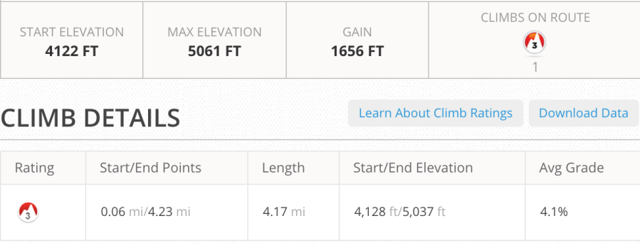
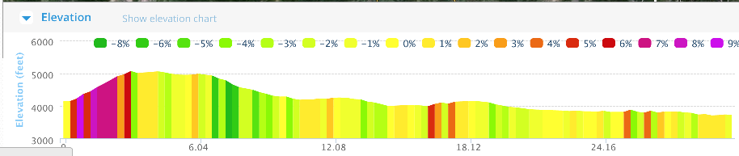
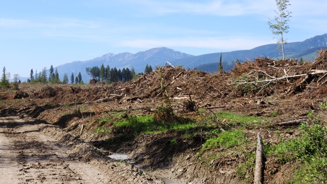
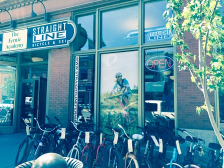
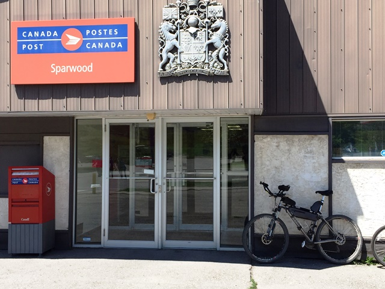
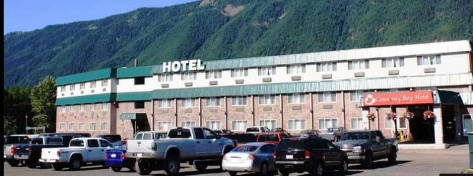

It is by riding a bicycle that you learn the contours of a country best, since you have to sweat up the hills and coast down them. –Ernest Hemingway
Elkford and up into the forest
Left Elkford with a hope that my tires would hold until Sparwood and also that I would be able to start riding up some of the hills. Crossed the Elk River and we had already learned "leaving the river" means going up. I started by going up on a reasonably busy road.
Mornings are for going up


It didn't take long until I started walking. The steepest section of the day was in the first 2.5 miles. I then turned onto a forest service road which led to a single track path which was unridable at the begining but flatter as it went on. I traveled past the lake in the picture at the top of the page and then thru sections of clear cut and forest.

The sections of clean cut usually resulted in a road torn up by the trucks taking the logs out.
Flathead River

This section was not difficult and I was in Sparwood before noon. I can see how people finished their first day in Sparwood or were able to quickly move on. Unfortunately I needed to get to the bike shop in Fernie, BC. My bike was not prepared to do the three mountain passes between Sparwood and the US border.
Fernie, BC Bike shop and bagels.

straightlinefernie.com
The guy in the bike shop did highlight the need for a rear derailleur hanger. This would present some challenges over the next few days. It had been on George's list but hadn't made it into my spare parts bag.
I had packed up my things the night before so that I could mail about 10 lbs of equipment back home.

Found a hotel in Sparwood and found a bigger town than expected. They were getting ready for their Miner's Days.

Causeway Bay Hotel, Sparwood, BCAcross the street from the "World's largest truck"
 GM Terex 33-19 "Titan" 22 ft high - 548 tons
GM Terex 33-19 "Titan" 22 ft high - 548 tons
To go places and do things that I've never done before– that’s what living is all about. See full screen map
Text by Jim O'Brien. Photographs by Jim O'Brien, see additional photos of the Tour Divide on Flickr.